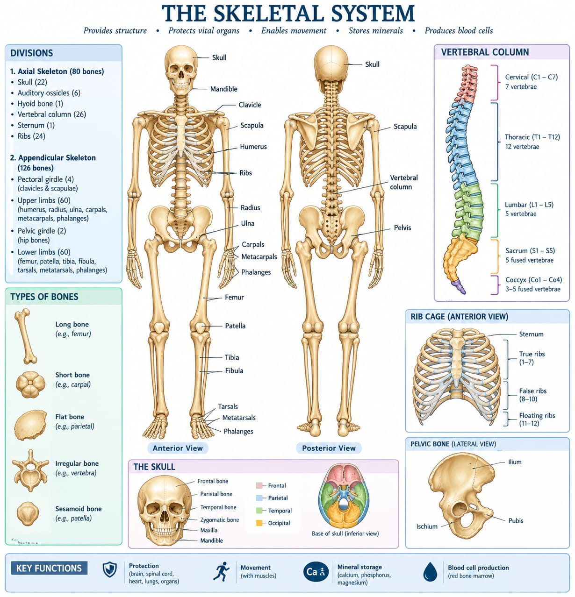
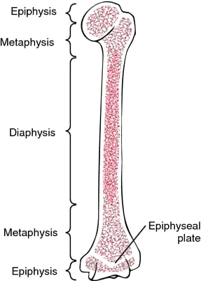

Functions & Divisions
206 bones, one framework, doing six different jobs at once.

DefSkeletal System
The framework of bones, cartilages, joints, and ligaments that supports and protects the body. An adult has 206 bones, though this varies slightly between individuals (accessory bones, fused sutures).
Six functions, in one place: support (a rigid frame bearing body weight and anchoring soft tissue), protection (cranium round the brain, thoracic cage round heart and lungs, vertebral column round the spinal cord), movement (bones act as levers that muscles pull on via tendons), mineral storage (calcium and phosphate, released into blood as needed), haematopoiesis (red marrow in flat bones and long-bone ends makes red cells, white cells, platelets), and fat/energy storage (yellow marrow in the medullary cavity stores triglycerides).
Two divisions
| Feature | Axial Skeleton | Appendicular Skeleton |
|---|---|---|
| Bones | 80 | 126 |
| Location | Skull, vertebral column, thoracic cage, hyoid | Limbs and girdles |
| Primary role | Protection & support of trunk organs | Locomotion & manipulation |
| Mobility | Relatively less mobile (except cervical spine) | Highly mobile, especially shoulder & hip |
Bone Classification & Structure
Five shapes for five mechanical jobs; every long bone shares the same basic anatomy, right down to the microscopic level.
Bones aren't all one shape because they don't all do the same mechanical job. Long bones (femur, humerus) act as levers — a shaft plus two ends. Short bones (carpals, tarsals) give stability with limited motion. Flat bones (sternum, ribs, cranial bones) protect organs and offer broad surfaces for muscle to attach to. Irregular bones (vertebrae, hip bone) don't fit any other category. Sesamoid bones (patella, pisiform) sit embedded inside tendons, reducing friction and changing the angle a muscle pulls at.
| Type | Description | Examples |
|---|---|---|
| Long | Longer than wide; shaft (diaphysis) + two ends (epiphyses); act as levers | Femur, humerus, phalanges |
| Short | Roughly cube-shaped; stability with limited motion | Carpals, tarsals |
| Flat | Thin, flattened, often curved; protect organs, broad muscle attachment | Sternum, ribs, scapula, cranial bones |
| Irregular | Complex shapes fitting no other category | Vertebrae, sacrum, hip bone |
| Sesamoid | Small, embedded in tendons; reduce friction, alter angle of pull | Patella, pisiform |
Gross structure of a long bone
- Diaphysis — the shaft; mainly compact bone around the medullary (marrow) cavity
- Epiphysis — the expanded ends; spongy (cancellous) bone under a thin compact-bone shell
- Epiphyseal plate/line — hyaline-cartilage growth plate in children, responsible for lengthwise bone growth; ossifies to a line in adults
- Periosteum — tough fibrous outer covering (not at joint surfaces); carries osteoblasts, osteoprogenitor cells, blood vessels, nerves; where tendons/ligaments attach
- Endosteum — thin lining of the medullary cavity and trabeculae, carrying osteoblasts and osteoclasts
- Articular cartilage — hyaline cartilage over the epiphyseal (joint) surfaces, reducing friction
Microscopic structure — the osteon (Haversian system)
- Central (Haversian) canal — runs the bone's long axis, carries blood vessels and nerves
- Lamellae — concentric rings of mineralised matrix around the central canal
- Lacunae — small spaces between lamellae, housing osteocytes
- Canaliculi — tiny channels linking lacunae to each other and to the central canal, for nutrient/waste exchange
- Perforating (Volkmann's) canals — transverse channels linking osteons to each other and to the periosteum/medullary cavity
- Spongy bone has no true osteons — a trabecular lattice along stress lines, with red marrow filling the spaces
Bone cells
| Cell | Location | Function |
|---|---|---|
| Osteoprogenitor cells | Periosteum & endosteum | Stem cells — differentiate into osteoblasts |
| Osteoblasts | Bone surfaces | Synthesise/secrete osteoid (organic matrix); mineralisation |
| Osteocytes | Trapped in lacunae | Mature bone cells; maintain matrix, sense mechanical strain |
| Osteoclasts | Bone surfaces (monocyte lineage) | Resorb bone matrix; remodelling & calcium homeostasis |
Your notes don't draw a specific asana link for bone shape or microscopic structure on their own — the practice connections your notes actually make (Q22: how asanas/pranayama benefit muscles and bones) are drawn at the joint and movement level, in Section 03, not at the tissue level covered here.

Joints
A joint is any point of contact between two bones — classified either by how much it moves, or by what tissue holds it together.
Joints can be described two ways, and it's worth keeping them separate. Functionally — by how much they move — a joint is synarthrosis (immovable, like a skull suture), amphiarthrosis (slightly movable, like an intervertebral disc), or diarthrosis (freely movable, like the shoulder). Structurally — by what tissue joins the bones — a joint is fibrous, cartilaginous, or synovial. The two systems line up loosely (fibrous joints tend to be immovable, synovial joints tend to be freely movable) but they're answering different questions, and exam questions sometimes ask for one specifically.
Functional classification (by movement)
| Class | Movement | Example |
|---|---|---|
| Synarthrosis | Immovable | Sutures of the skull |
| Amphiarthrosis | Slightly movable | Pubic symphysis, intervertebral discs |
| Diarthrosis | Freely movable | Shoulder, hip, knee, elbow |
Structural classification (by tissue)
- Fibrous — dense fibrous tissue; generally immovable/slightly movable.
- Sutures — skull only, interlocking, ossify with age
- Syndesmoses — ligament/membrane, e.g. distal tibiofibular joint, radio-ulnar interosseous membrane
- Gomphoses — peg-in-socket, e.g. a tooth in its socket
- Cartilaginous — united by cartilage; little to moderate movement.
- Synchondroses — hyaline cartilage, often temporary, e.g. epiphyseal growth plates
- Symphyses — fibrocartilage, e.g. pubic symphysis, intervertebral discs
- Synovial — fluid-filled cavity; the most mobile type. Structure: articular cartilage, joint capsule (fibrous layer + synovial membrane), synovial fluid, reinforcing ligaments, and (in some joints) menisci, fat pads, bursae.
Types of synovial joint
| Type | Movement | Example |
|---|---|---|
| Plane (gliding) | Short, non-axial gliding | Intercarpal, acromioclavicular |
| Hinge | Uniaxial — flexion/extension only | Elbow, knee, interphalangeal |
| Pivot | Uniaxial — rotation on a central axis | Atlanto-axial, proximal radio-ulnar |
| Condyloid | Biaxial — flexion/extension, abduction/adduction | Wrist, metacarpophalangeal |
| Saddle | Biaxial — greater range than condyloid | Thumb carpometacarpal |
| Ball-and-socket | Multiaxial — all movements plus rotation | Shoulder, hip |
Joint Movements & Practice
The vocabulary that names every movement an asana asks a joint to make.
Every movement at a synovial joint has a name, and the names come in opposite pairs — one direction, then its reverse. Learn them as pairs and the whole list becomes half the size: flexion/extension, abduction/adduction, supination/pronation, inversion/eversion, dorsiflexion/plantarflexion, protraction/retraction, elevation/depression. Rotation and circumduction stand alone — rotation turns a bone around its own long axis, and circumduction strings flexion, abduction, extension, and adduction together into one conical sweep.
- Flexion / Extension — decreasing / increasing the angle between two bones
- Abduction / Adduction — moving a limb away from / toward the midline
- Rotation (medial/lateral) — turning a bone around its own long axis
- Circumduction — a conical movement combining flexion, abduction, extension, adduction in sequence
- Supination / Pronation — forearm rotation so the palm faces anteriorly-superiorly / posteriorly-inferiorly
- Inversion / Eversion — turning the sole of the foot medially / laterally
- Dorsiflexion / Plantarflexion — lifting the foot toward the shin / pointing the toes away, at the ankle
- Protraction / Retraction — moving a body part anteriorly / posteriorly in the transverse plane (e.g. scapular)
- Elevation / Depression — lifting / lowering a body part (e.g. shoulder)
On why this matters for the joints themselves (not just the muscles crossing them, which the Muscular System topic covers): the notes state that a hinge joint like the knee or elbow is built for uniaxial flexion/extension, and that forcing rotation or lateral movement at it — misaligned padmasana or virasana are the examples given — risks ligamentous strain, not muscular strain. That is a joint-structure argument, distinct from the muscular-fatigue and stretch-tolerance content in the Muscular System topic, which is why Q22 asks about muscles and bones as two separate halves of the same answer.
Source: Anatomy & Physiology — M.Sc. Notes, Unit 1 (Skeletal System) and Unit 2 (Joints).